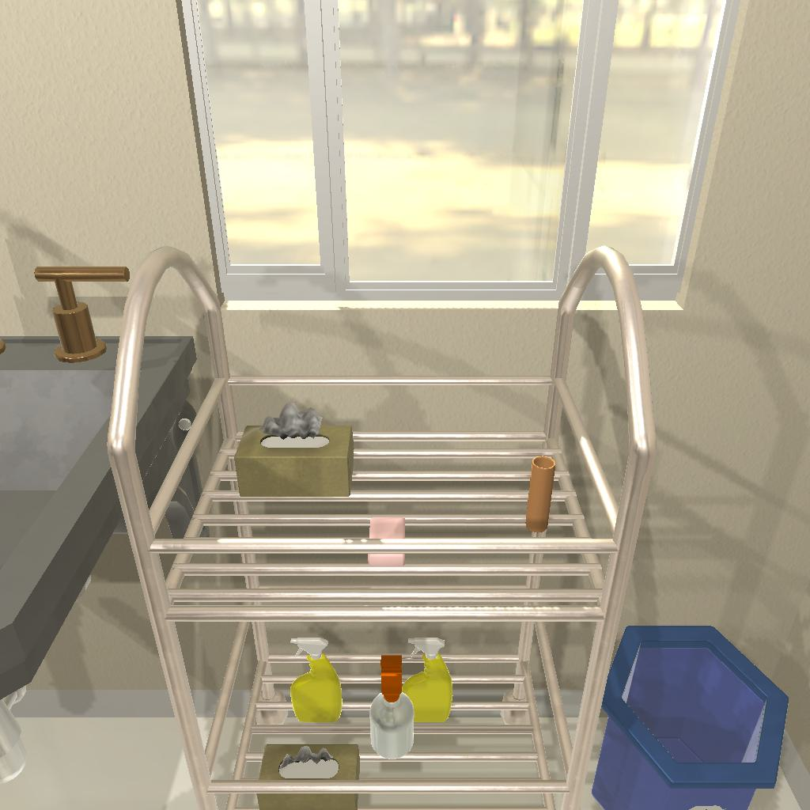

---------------------------------------------------------task: 28---------------------------------------------------------
--------------------------------------------------------------------------------------------------------------------------------------------------------------------
--------------------------------------------------------------------------------------------------------------------------------------------------------------------
Step:--------------------------------------------------------------------------19-------------------------------------------------------------------------------
----------------------------------------
VLM Prompt:
Image1:
Image2:
**Instruction**
1. Analyze the provided images to identify all visible household objects and compare the difference between images (e.h. whether the object is opened or not and taken on hand or not), focusing on those relevant to the task description "put two spraybottle in toilet."
2. Use the analysis of images and the task hint "The agent must find an object of the desired type, pick it up, find the correct location to place it, put it down there, then look for another object of the desired type, pick it up, return to previous location, and put it down there with the other object." to answer the question: what is the most reasonable action in the choices for the task description "put two spraybottle in toilet"?
3. Decide and write the answer using the template: The answer is: (i): , where i is the real number. If there is no desired object in images, search every place based on **Initial Observation** to find the object. And if no one is exactly correct, choose a similar answer.
**Initial Observation**
You are in the middle of a room. Looking quickly around you, you can see bathtub (1), bathtubbasin (1), cart (1), sink (1), garbagecan (1), sinkbasin (1), countertop (1), drawer (1-4), toilet (1), toiletpaperhanger (1)
**Answer Choices**
(1): go to bathtub 1
(2): go to bathtubbasin 1
(3): go to sink 1
(4): go to garbagecan 1
(5): go to sinkbasin 1
(6): go to countertop 1
(7): go to drawer 3
(8): go to drawer 4
(9): go to toilet 1
(10): go to toiletpaperhanger 1
(11): take tissuebox 2 from cart 1
(12): take tissuebox 3 from cart 1
(13): take faucet 1 from cart 1
(14): take soapbottle 1 from cart 1
(15): take spraybottle 2 from cart 1
(16): take spraybottle 3 from cart 1
(17): take toiletpaper 2 from cart 1
(18): take soapbar 1 from cart 1
(19): examine cart 1
**Answer**
Let's think step by step by following the instructions.
----------------------------------------
----------------------------------------
Original Response:
First, we analyze the provided images for visible household objects. In Image 1, we see a countertop with a roll of toilet paper and a candle on a holder. In the reflection of the mirror, we see a toilet, a sink, and some objects on the countertop. Image 2 shows a cart next to a window with various items, including two spray bottles (one on the second shelf and one on the bottom shelf), a tissue box, and other toiletries.
Comparing the differences between images, we notice that the spray bottles are stationary and not in anyone's hand, and they are not opened.
Based on the task description "put two spraybottle in toilet" and the task hint provided, the most reasonable action would be to pick up the spray bottles from the cart and place them in the toilet. Since the initial observation does not mention the cart, but we can clearly see it in Image 2 with the spray bottles, we will consider the cart as part of our environment.
From the answer choices, the most reasonable actions to accomplish the task would be to go to the cart and take the spray bottles. Since there are two spray bottles in the cart, we would need to take both, one at a time, to place them in the toilet.
The answer is: (15): take spraybottle 2 from cart 1 and (16): take spraybottle 3 from cart 1.
----------------------------------------
----------------------------------------
>>> Refine Original VLM Response and Get Pure Action: take spraybottle 2 from cart 1 and (16): take spraybottle 3 from cart 1
----------------------------------------
-----------------------------------------------------------------
Running time: 32.64992308616638 seconds
Total Money: 14.903590000000001
-----------------------------------------------------------------
-----------------------------------------------------------------
Text Observation:You pick up the spraybottle 2 from the cart 1.
-----------------------------------------------------------------
UNSUCCEED